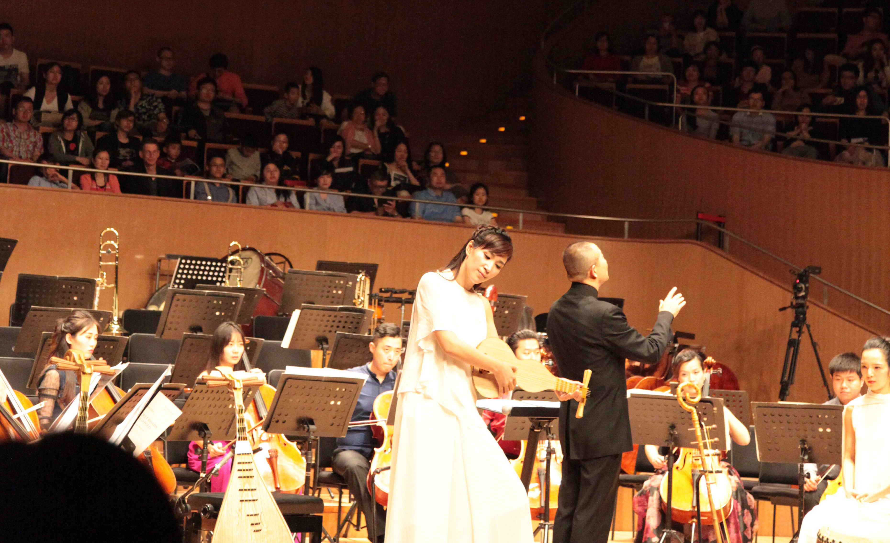

《敦煌遗音》世界首演，反弹琵琶奏千年古音
饶阳乐器 2017-03-15
2017年5月13日晚，上海东方艺术中心音乐厅上演了一场非常特别的音乐会，这里有对海派文化的思考，有人与自然的对话，有中国民族声乐地图，还有千年前的敦煌遗音，这就是由国宝级音乐家谭盾指挥、由上海爱乐乐团演奏的《水上天上心上·丝绸之路》音乐会。
音乐会一开始，青年国乐演奏家张梦吹响了古老的第几玮度(Didgeridoo)，营造出跨越时空的梦境，第几玮度和管弦乐对话，引领着大家漂洋过海，沿着海上丝路，寻找故乡的音。接下来，青年唢呐演奏家刘雯雯，用手中的唢呐吹响了《百鸟朝凤》，用天空中的自然之声，寻找人类与大自然沟通的丝路。之后，中国优秀歌手谭维维演唱的华阴老腔、藏族哭腔、苗族水腔和陕西秦腔，以心为源头，描绘出了一幅充满灵魂性的民族声乐地图。
评论区
评论列表
当前共有0人评论


舒银，青年琵琶演奏家，上海音乐学院民乐系琵琶专业讲师。毕业于中央音乐学院附中、大学，保送研究生，2008年获硕士学位。师从章红艳教授。曾多次在全国重大比赛中获奖。


舒银，青年琵琶演奏家，上海音乐学院民乐系琵琶专业讲师。毕业于中央音乐学院附中、大学，保送研究生，2008年获硕士学位。师从章红艳教授。曾多次在全国重大比赛中获奖。